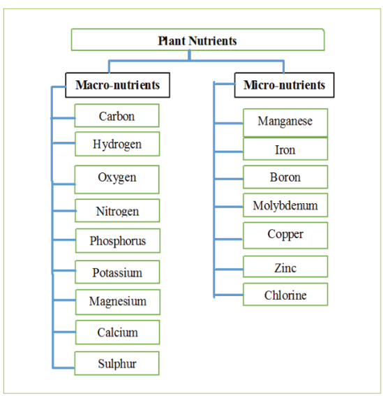
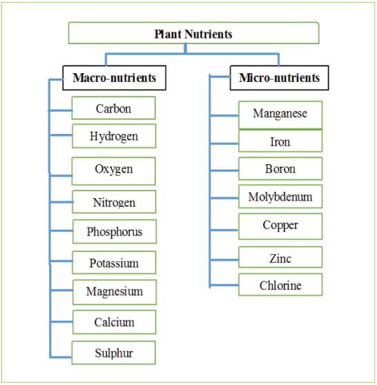

Nutrient management
Like other living things, plants need nutrients for proper growth and produce high
yields. Plant nutrients are chemical elements that are essential to the nourishment
of plant health. Soil is among the most crucial land resource components in crop
production. Apart from providing anchorage to the plants, air, and water, it also
provides nutrients for the proper growth and development of the crops. The soil
that can supply plants with adequate nutrients is fertile. Therefore, soil fertility is
the ability of the soil to provide crop plants with the required nutrients in proper
proportions for optimal production. A decrease or deficiency in the nutrients crop
plants need, affects growth and leads to low yields.
About sixteen nutrients are essential for normal plant growth. These nutrients
must be supplied to plants in sufficient quantities and proportions. Among these,
some nutrients are required by plants in large quantities, while others are needed
in small amounts. Those required in large quantities are termed macro-nutrients,
while those needed in small amounts are called micro-nutrients or trace-nutrients.
Plant nutrients are also called elements. Figure 1.2 shows the classification of
plant nutrients.

Figure 1.2: Classification of plant nutrients